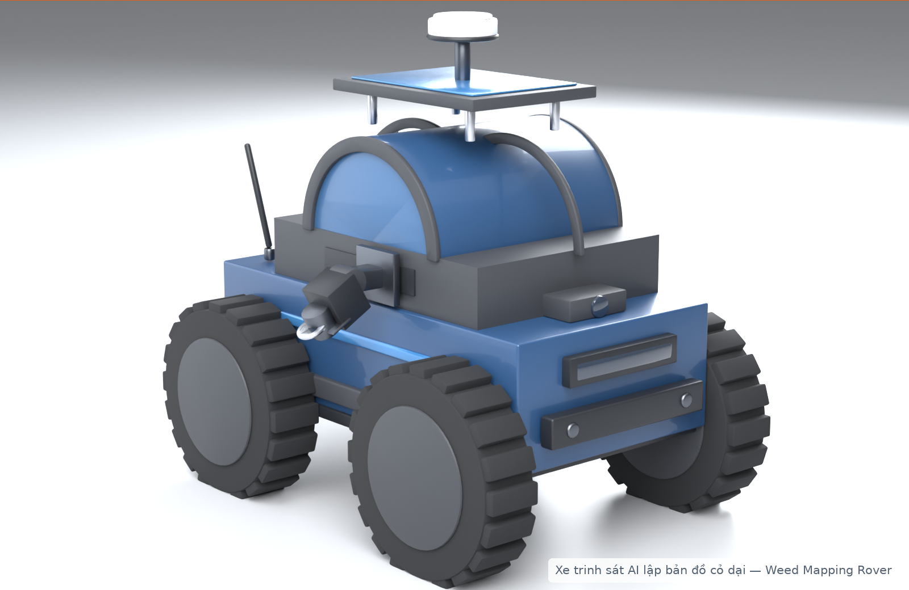

Ứng dụng Trí tuệ Nhân tạo Biên (Edge AI) và Định vị Centimet (GPS RTK) giải phóng sức lao động thăm rẫy trên các loại cây trồng theo hàng quy mô lớn.
Dưới thời tiết nắng gắt 38°C, người nông dân phải lội bộ trung bình 15–20 km mỗi ngày giữa các luống ngô, sắn rậm rạp. Rất dễ bị say nắng và kiệt sức.
Cỏ dại và sâu bệnh nấp ở tầng lá thấp sát gốc (cách mặt đất 10–30cm). Đi bộ lướt qua bằng mắt thường sẽ không thấy, chỉ 1 tuần sau đã lây lan thành dịch.
Nông dân chỉ nhớ vùng bị bệnh "mơ hồ ở khoảng giữa rẫy". Khi mang bình xịt quay lại thì mất công tìm kiếm hoặc đành phun thuốc tràn lan gây tốn kém.
"Hiện nay, nông dân vẫn phụ thuộc 90% vào đi bộ thủ công hoặc các công cụ quét từ trên cao không nhìn thấy sâu bệnh bẹ lá"
Chi phí công cao, mất 3–4 ngày, dễ bỏ sót ổ dịch.
Không soi được bẹ lá và chân gốc, sai số GPS 1–3 mét.
Chỉ đo 1 điểm nhỏ, không phát hiện được cỏ dại xâm lấn.
Lãng phí 70% hóa chất, ô nhiễm đất và nguồn nước ngầm.
Hệ thống xe robot trinh sát nhỏ gọn đóng vai trò là "Người đi thăm rẫy số hóa": tự động luồn lách qua các luống cây hẹp (50–80cm), quét camera 120fps và ghim tọa độ RTK centimet để tạo Bản đồ chỉ dẫn điểm nóng.

Xe nhỏ gọn luồn lách giữa hàng ngô, sắn 50–80cm không làm gãy cây.
Cụm 2 camera 120fps soi bẹ lá, Jetson Orin phân tích tại chỗ >90%.
Holybro NEO-F9P khóa tọa độ centimet (±2cm), đóng gói file bản đồ GeoJSON.
Nông dân mở app đi thẳng chân tới đúng vị trí để nhổ cỏ hoặc chăm sóc cây bệnh.
| Tiêu chí so sánh | Đi thăm thủ công | Quét Drone trên cao | Xe MicroScout-AI |
|---|---|---|---|
| Sức người & Thời gian | Rất mệt, mất 3–4 ngày lội rẫy | Nhanh nhưng phải có chứng chỉ bay | Tự động, tiết kiệm 80% thời gian |
| Khả năng soi bẹ lá & gốc | Dễ bỏ sót các ổ dịch nấp sâu | Không thể soi (bị lá ngọn che khuất) | Tốt nhất: Camera kép tầm thấp soi sát gốc |
| Độ chính xác tọa độ | Ước lượng mơ hồ bằng mắt thường | Sai số GPS từ 1 – 3 mét | Centimet: Sai số thực tế ±2–3 cm |
| Hiệu quả xử lý sau trinh sát | Mất công tìm lại hoặc phun tràn lan | Ảnh ghép phức tạp, khó tìm đúng cây | Mở app là đi thẳng tới điểm nóng xử lý |
Cung cấp trọn gói xe trinh sát + trạm RTK cho các đơn vị sở hữu rẫy >20 hecta.
Dành cho các hộ nông dân quy mô vừa và nhỏ (3–10 ha), quét định kỳ 3–4 lần/vụ.
Thu phí thuê bao hàng năm cho các doanh nghiệp chế biến theo dõi vùng nguyên liệu.
Tính trên quy mô trang trại chuẩn 25 – 30 hecta.
Hơn 2 triệu hecta cây cạn theo hàng tại Việt Nam (Ngô 900.000 ha, Sắn 530.000 ha, Mía 260.000 ha, Đu đủ và rau màu).
Các Hợp tác xã và Trang trại lớn >10ha tại các tỉnh trọng điểm: Sơn La, Gia Lai, Đắk Lắk, Đồng Nai, Tây Ninh.
Cung cấp 300 xe trinh sát và triển khai 2.500 hecta dịch vụ số hóa rẫy.
Tiềm năng mở rộng: Xuất khẩu công nghệ sang Lào, Thái Lan, Campuchia – nơi có hàng triệu hecta rẫy với bài toán thăm rẫy tương tự.
Khát vọng giải phóng đôi chân người nông dân và thúc đẩy chuyển đổi số nông nghiệp xanh bền vững!